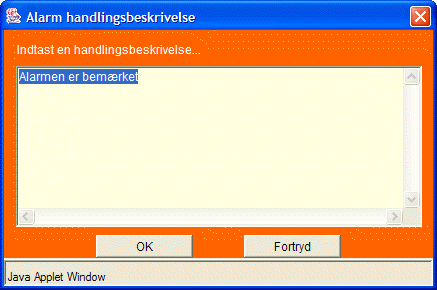

Alarmer, der sendes til 963, skal godkendes af en bruger for at vise, at alarmen er set. Når en alarm godkendes, skal man indtaste en beskrivelse af den handling, der er foretaget, som svar på alarmen.
Sådan godkendes alarmer:
1 Se alarmen(erne), der skal godkendes.
2 Klik på den/de alarmer, der skal godkendes. (Vælg mere end én alarm ved at holde tasten ‘Ctrl’ nede og derefter klikke på de ønskede alarmer). Vælg alle alarmer ved at klikke på ‘Vælg Alle’. Fravælg alle valgte alarmer ved at klikke på ‘Fravælg Alle’.
3 Klik på ‘Godkend Valgte Alarmer’. En dialogboks fremkommer som vist nedenfor.

4 Indtast tekst, der beskriver, hvilken handling, der er foretaget, for at hjælpe ved fremtidig problemløsning (for eksempel den handling, der er foretaget på grund af alarmen).
5 Klik på ‘OK’.
Bemærk: Denne funktion er kun tilgængelig, hvis man bruger Microsoft Internet Explorer version 4.02 eller senere eller Netscape version 6.1 eller senere.